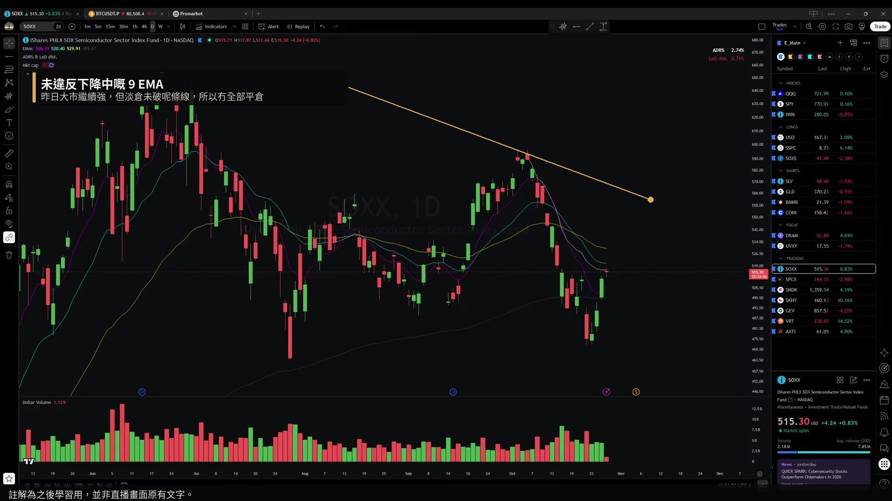
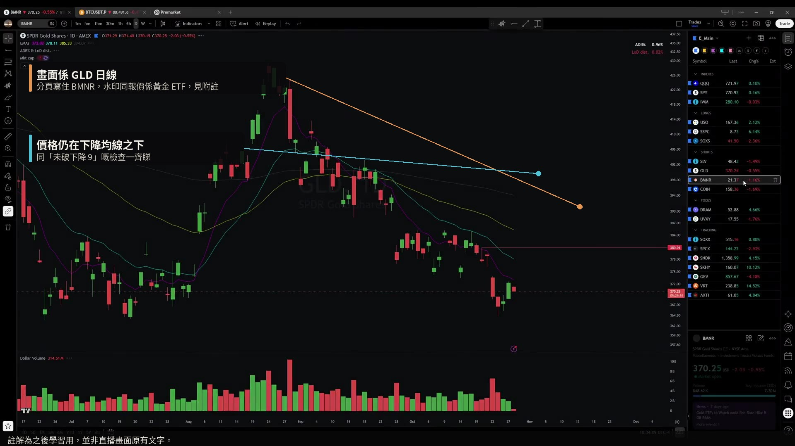
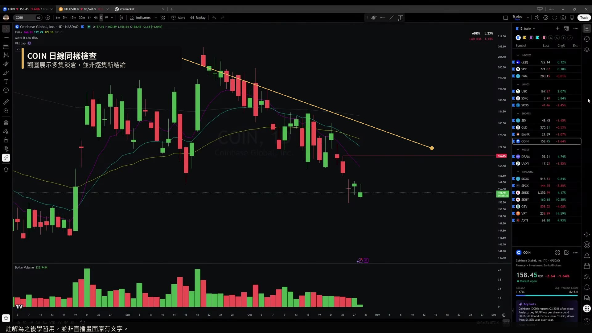

概要
持有理由可以好簡單
1:12:40 有人問：昨日大市繼續強，點解仍然持有咁多倉、唔全部平掉。佢話最簡單嘅理由：呢啲交易未有違反下降中嘅 9 EMA。畫面先後經過 SOXX、黃金 ETF、COIN 等同類型檢查。
1:13:05 分頁寫住 BMNR，但水印、正式名稱同報價都係 GLD（SPDR Gold Shares）。本站按圖同報價當作 GLD，並標出分頁錯配。圖例冇印 9 嘅週期。
圖一 · 主圖
SOXX：未違反下降中嘅 9 EMA
直播 1:12:50

原話
I'm surprised you held as many positions as you did through yesterday's continued strength. Can you talk about why you decided not to close out everything yesterday? In short, like none of those trades are violating the declining 9 EMA. I think that's the simplest reason that I can give.
我好意外，昨日大市繼續強，你仍然持有咁多倉。可唔可以講下點解昨日決定唔全部平掉？簡單嚟講，就係呢啲交易未有違反下降中嘅 9 EMA。我覺得呢個係我可以俾到最簡單嘅理由。
點樣讀
持有唔係因為預測大市一定跌，而係結構未壞：下降 9 未被違反。
呢個係當時最簡單嘅理由，唔好擴寫成所有淡倉嘅永恆規則。圖例冇印週期。
圖二
畫面係 GLD，分頁卻寫 BMNR
直播 1:13:05

原話
None of those trades are violating the declining 9 EMA.
呢啲交易未有違反下降中嘅 9 EMA。
分頁寫 BMNR，水印寫 GLD 1D，正式名稱 SPDR Gold Shares，右側 GLD 報價同圖上價格相符；BMNR 報價在右側另一行。以圖同報價當作 GLD。
點樣讀
呢幅用來說明同一條規則可以套去其他淡倉，唔係黃金嘅獨立新結論。
代碼錯配要標出，唔好把 BMNR 寫成呢幅圖嘅主體。
圖三
COIN 同樣做下降 9 檢查
直播 1:13:20

原話
I think that's the simplest reason that I can give.
我覺得呢個係我可以俾到最簡單嘅理由。
點樣讀
COIN 只係同一輪檢查裡嘅其中一隻，唔另開新科。
1:13:40 亦掃過 QQQ 日線，同樣唔單獨成科。
附註
注意事項
- GLD／BMNR 分頁錯配係呢科主要畫面分歧。
- 圖例冇印 9 嘅週期。畫面睇唔到逐隻倉位有冇真係持有。